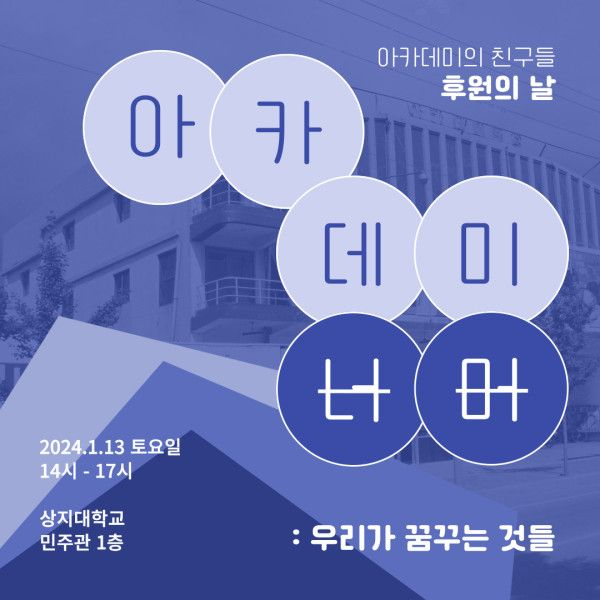
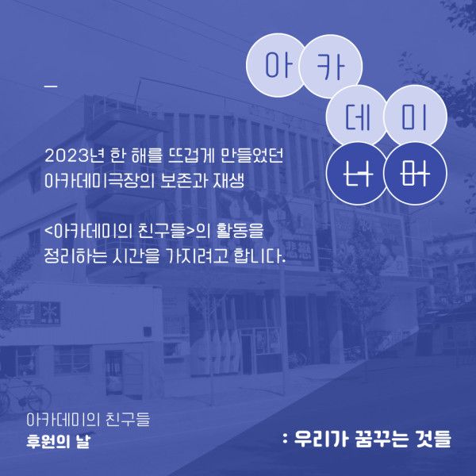
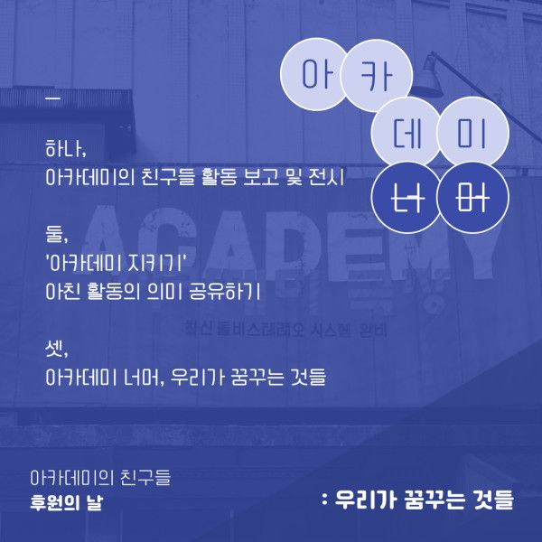
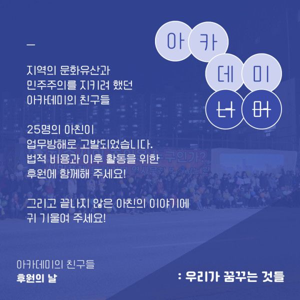

아카데미의 친구들 후원의 날
"아카데미 너머 : 우리가 꿈꾸는 것들"
아카데미의 친구들 후원의 날에 여러분을 초대합니다.
2023년 한 해를 뜨겁게 만들었던
아카데미극장의 보존과 재생
<아카데미의 친구들>의 활동을 정리하고
아카데미 너머, 우리가 꿈꾸는 것들에 대한 이야기를
전하고자 합니다.
편하게 오셔서 뜨거운 응원과 격려 건네주시면 좋겠습니다.
아카데미의 친구들 드림
▪️일시 : 2024. 1. 13. 토. 14:00~17:00
▪️장소 : 상지대학교 민주관 1층(상지대길 83)
▪️문의 : 070-8825-0319
후원의 날에 만나요!
[세부 행사 안내]
- 다과 케이터링이 준비되어 있습니다.
- 아친 활동에 대한 사진전과 상영존이 있습니다. 편하게 둘러보세요.
- 활동보고와 발제, 발언을 듣는 메인 행사는 3시부터 진행됩니다.(약 1시간~1시간 반 예상)
[후원계좌]
*계좌
(SC제일은행) 626-20-255349
예금주 : 사회적협동조합모두
⠀
*정기 후원으로 함께하기
후원회원 가입 시 선택금액에 한하여 매월 5일 "사회적협동조합모두" 이름으로 자동 출금됩니다.
링크 : bit.ly/academy_go
*정기 후원 사이트를 통해 진행한 경우 기부금 영수증 발급, 기부내역 확인을 사이트 내에서도 하실 수 있습니다.